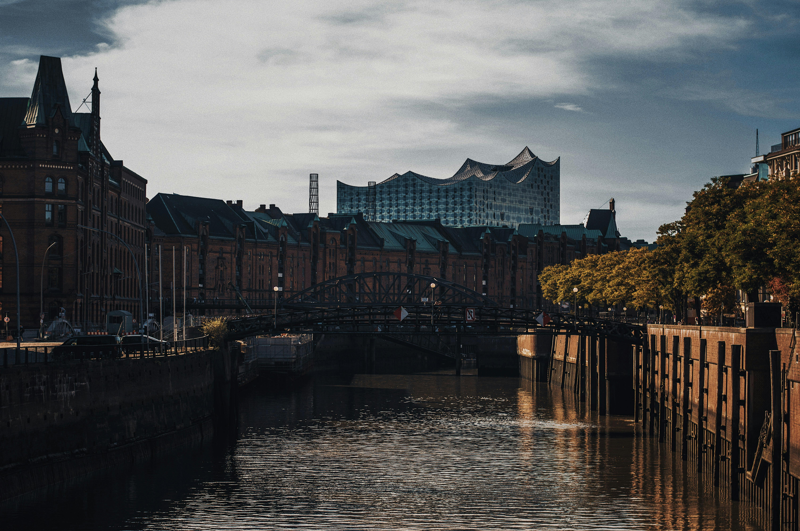

Hamburg is one of the largest ports in Europe. Hundreds of different types of ships pass through the port every day, both cruise ships and multi-ton tankers.
This website is about Hamburg
Hamburg is one of the largest port cities in Europe, located at the confluence of the Elbe River and the North Sea.
